lasagna
home page
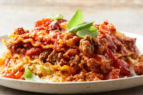
lasagna recipe
Making this lasagna recipe a
day ahead and refrigerating overnight allows the spices to meld and gives
it exceptional flavor.
Ingredients
- 1 ½ pounds lean ground beef
- 1 onion, chopped
- 2 cloves garlic, minced
- 1 (29 ounce) can diced tomatoes
- 2 (6 ounce) cans tomato paste
- 2 tablespoons brown sugar
- 1 tablespoon chopped fresh basil
- 2 ½ teaspoons salt, divided
- 1 teaspoon dried oregano
- 12 dry lasagna noodles
- 1 pint part-skim ricotta cheese
- ½ cup grated Parmesan cheese
- 2 large eggs, beaten
- 2 tablespoons dried parsley
- 1 pound mozzarella cheese, shredded
- 2 tablespoons grated Parmesan cheese
Directions
- Gather all ingredients.
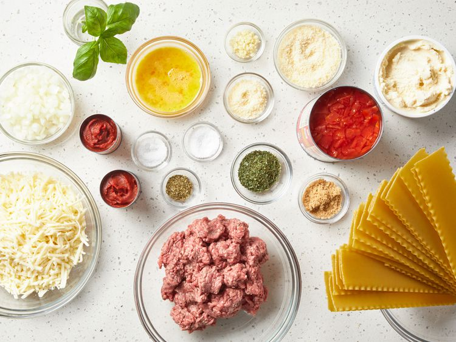
-
Cook and stir ground beef, onion, and garlic in a large skillet over
medium heat for 5 minutes; drain fat.
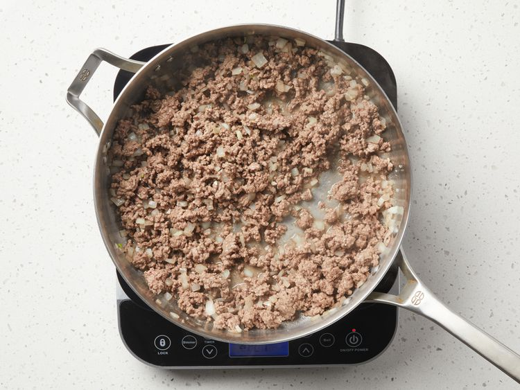
-
Mix in diced tomatoes, tomato paste,
brown sugar, basil, 1 1/2
teaspoons salt, and oregano. Simmer meat
sauce, stirring occasionally, for 30 to 45 minutes.
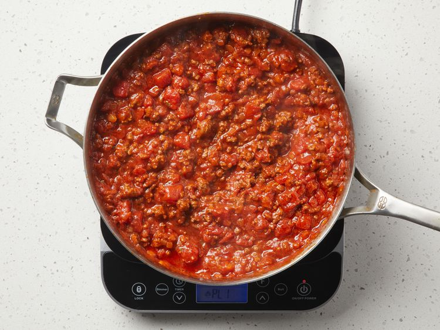
- Preheat the oven to 375 degrees F (190 degrees C).
-
Meanwhile, bring a large pot of lightly salted water to a boil. Cook
lasagna noodles in boiling water, stirring occasionally, until tender
yet firm to the bite, about 8 minutes; drain. Lay noodles flat on
towels; blot dry.
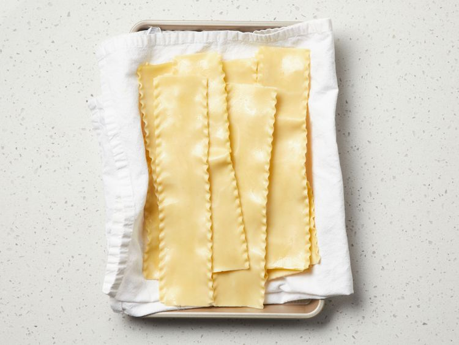
-
Mix together ricotta, 1/2 cup Parmesan cheese, eggs, parsley, and
remaining 1 teaspoon salt in a medium bowl.
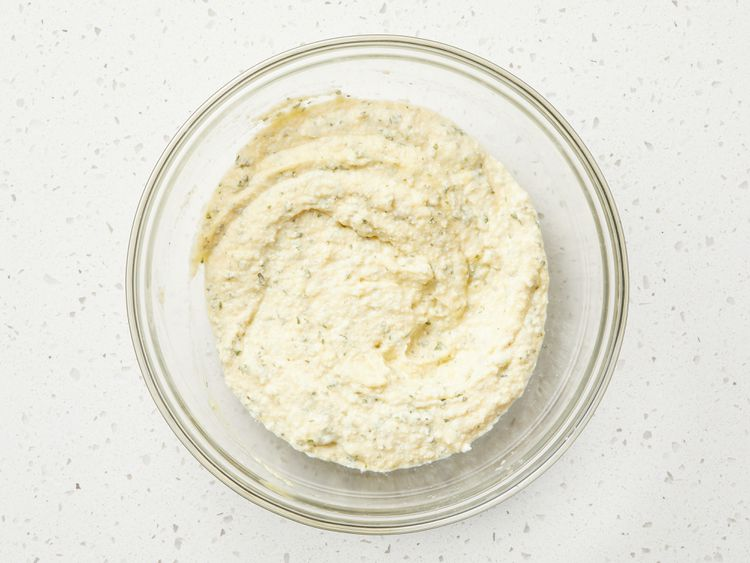
-
Layer 1/3 of the noodles in the bottom of a 9x13-inch baking dish. Cover
with 1/2 of the ricotta mixture.
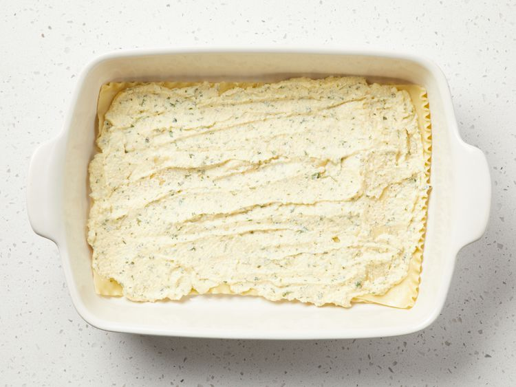
-
Cover the ricotta mixture with 1/2 of the mozzarella cheese, and 1/3 of
the meat sauce.
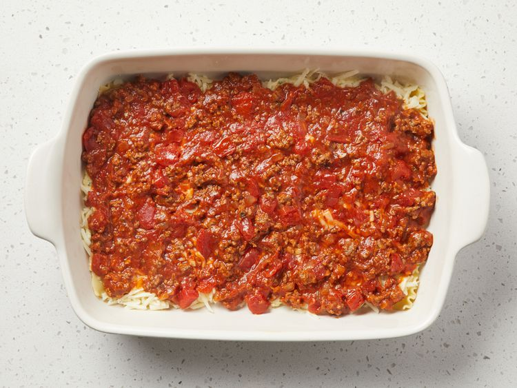
-
Repeat. Top with remaining noodles and meat sauce. Sprinkle 2
tablespoons Parmesan cheese over the top.
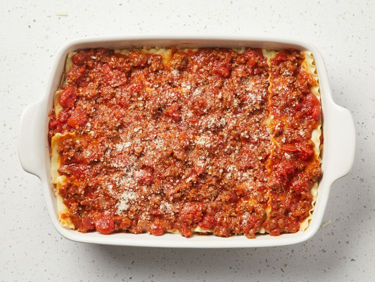
-
Bake in the preheated oven for 30 minutes. Let stand for 10 minutes
before serving.
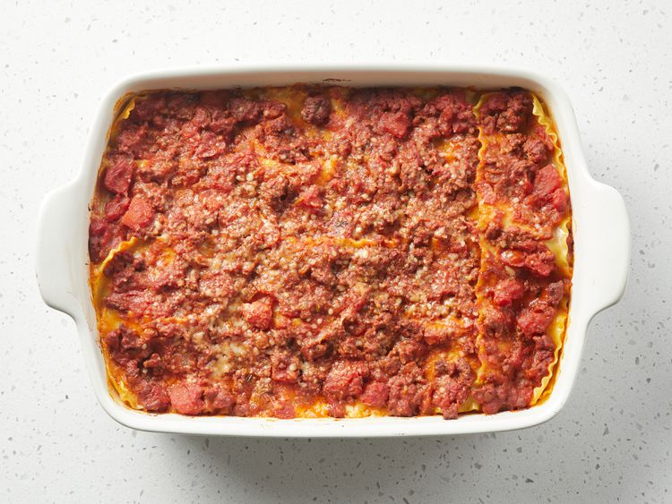
- Enjoy!
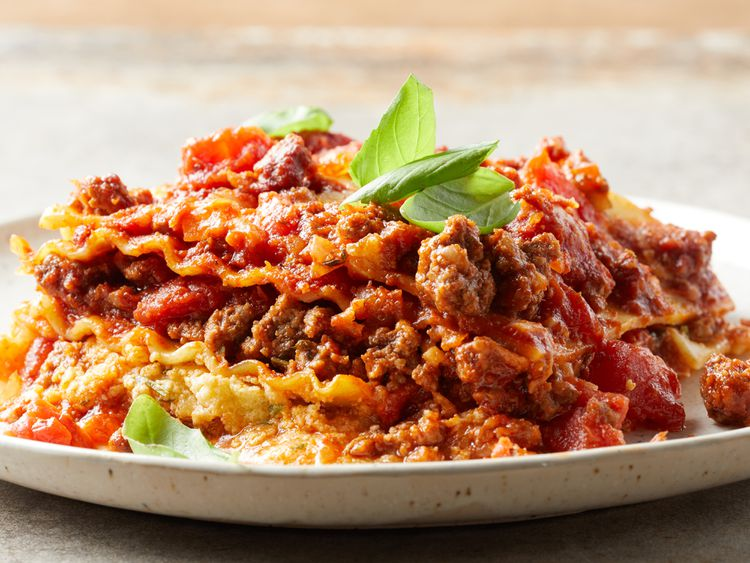